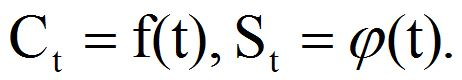
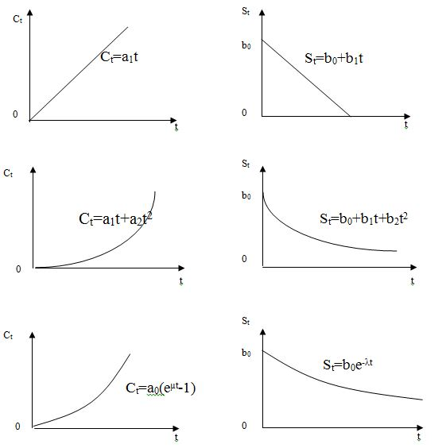

Часть 3. Задача замены оборудования длительного пользования
Постановка задачи и выбор критерия оптимизации
Пусть в эксплуатации находится некоторое оборудование. Покупная цена нового оборудования известна и равна S. Допустим, что известны затраты на эксплуатацию оборудования (уход за ним, ремонт и т.д.), производимые в начале (1, 2, …,t,…,n) периодов. Предположим, что периоды равны, например году. Обозначим затраты, производимые в t-й период, через Ct. В результате старения балансовая цена оборудования непрерывно падает и зависит от периода списания, обозначим ее St. Требуется определить период списания оборудования, чтобы затраты на единицу времени были минимальны.
Рассмотрим задачу, в которой известны эксплуатационные затраты в разные периоды (дискретную) C1, C2,…, Ct, … (естественно, что Ct+1>Ct), а также значения S1, S2,…,St,…, (St+1>St), и непрерывные задачи, в которых известны зависимости. 
При этом ограничимся рассмотрением трех случаев, когда:
- Сt и St линейно зависят от t:
Ct=a1t, St=b0+b1t;
- Сt и St квадратично зависят от t (по параболе):
Ct=a1t+a2t2, St=b0+b1t+b2t2;
- Сt и St экспоненциально зависят от t:
Ct=a0 (et-1), St=b0et.
Это связано с заменой оборудования, подверженного износу. Все три случая можно представить графически (рис. 4.1).
Рис. 4.1. Зависимости эксплуатационных затрат и балансовой стоимости оборудования от времени
Рассмотрим все указанные случаи.
Чтобы затраты при замене оборудования через t периодов были наименьшими, естественно, должно выполняться условие
или в развернутом виде
После соответствующих преобразований получим окончательно
Это условие при любых соотношениях между величинами Ct и St является необходимым условием оптимальности стратегии, а так как Ct+1Ct и St+1 < St, то написанное условие является еще и достаточным условием оптимальности;
Оптимального периода списания нет. Если функции Ct и St линейные, то средние издержки эксплуатации оборудования будут постоянны, поэтому, если хотят произвести замену в любое время, достаточно обеспечить линейность характеристик Ct и St;
в этом случае средние издержки линейно зависят от периода эксплуатации;
После соответствующих преобразований получим
Решать это уравнение целесообразно графически, обозначив предварительно
Точка пересечения и дает искомое время t, при котором необходимо произвести замену оборудования.